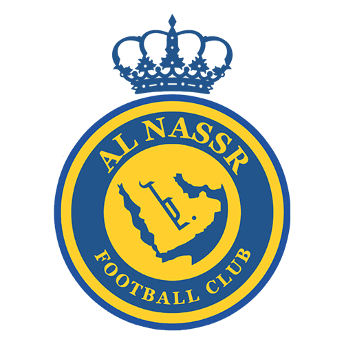
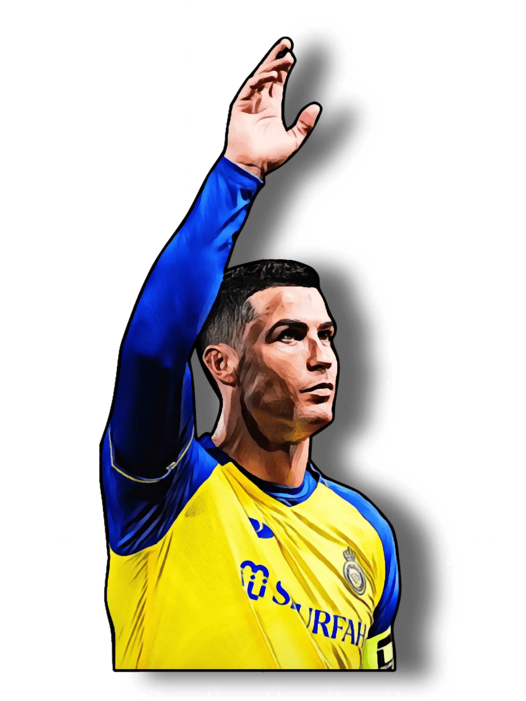
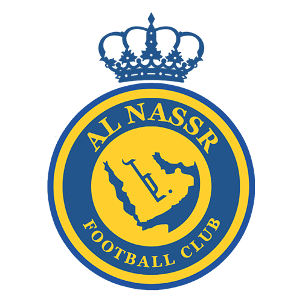
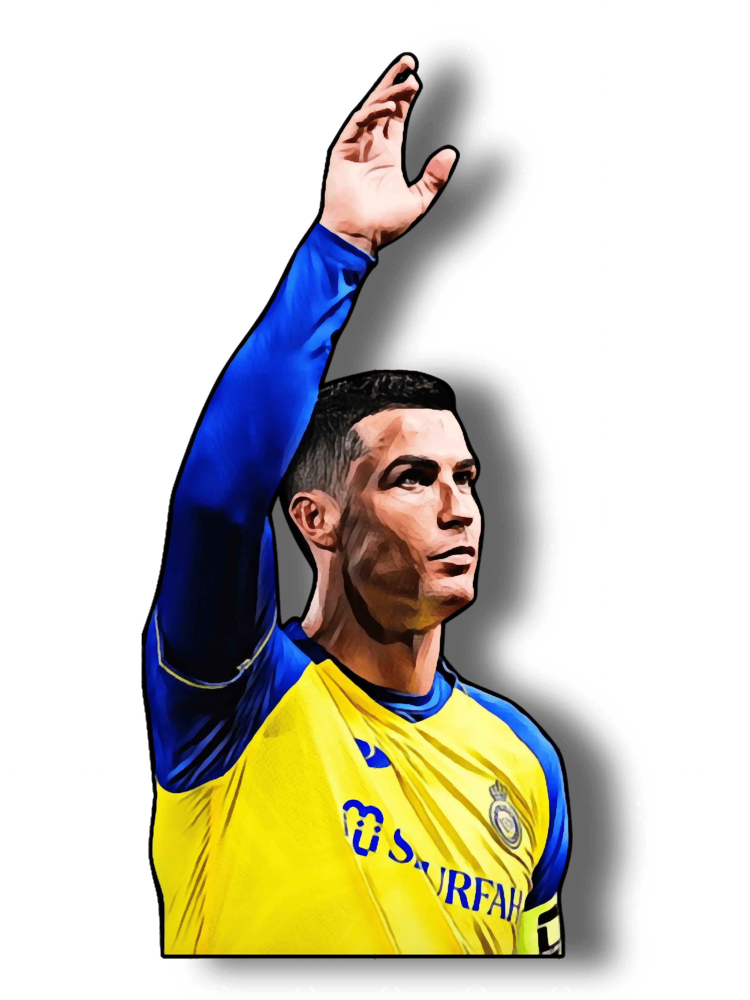

Jogos: 28
Gols: 24
Títulos: 1
Prêmios Individuais: 2
Recordes: Mais contribuições para gol e assistências em uma única partida da MLS com 6 contribuições e 5 assistências
Resumo:
Lionel Messi ingressou no Inter Miami em 2023 trazendo imensa atenção global ao
clube da Major League Soccer (MLS). Ele rapidamente se destacou, contribuindo com gols e
assistências, e ajudou a elevar o desempenho e a visibilidade do time. Sua chegada também
impulsionou o interesse e o crescimento do futebol nos Estados Unidos.
 


